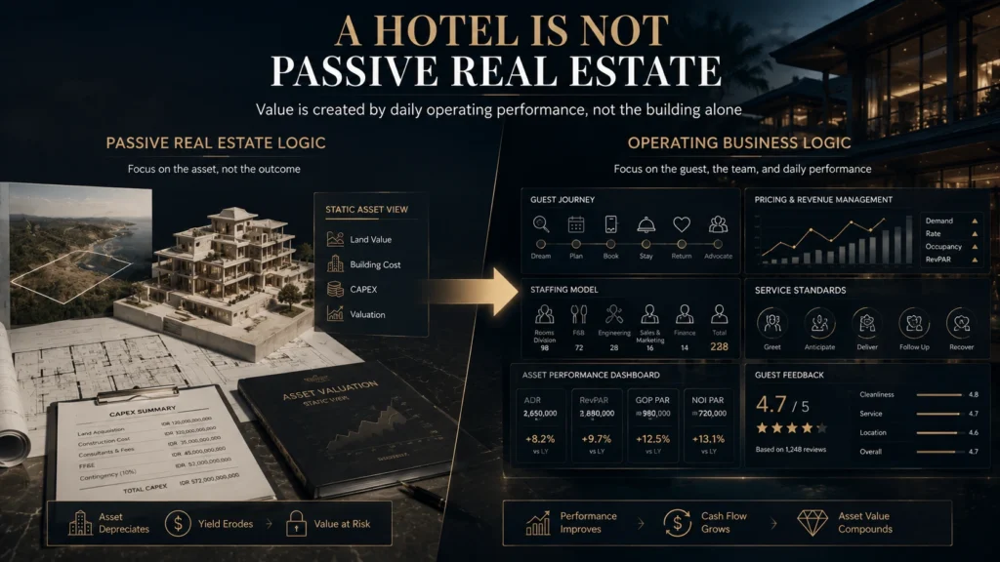
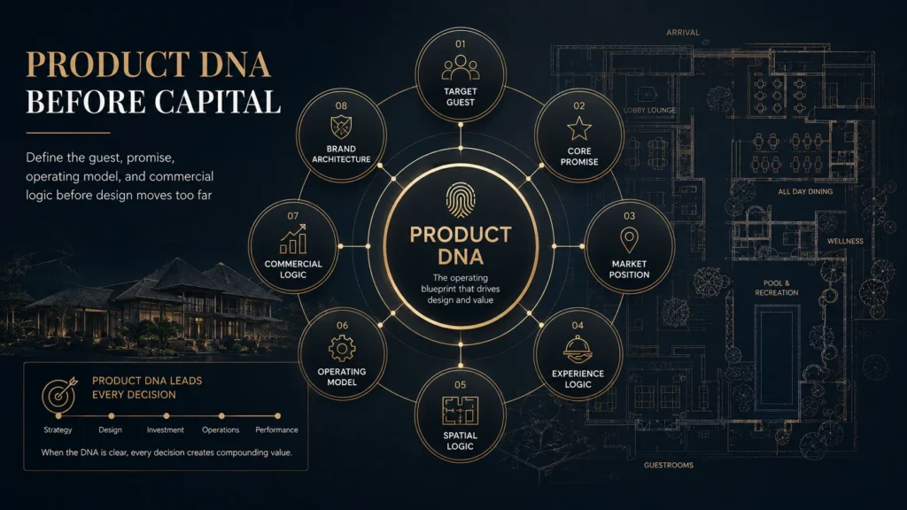
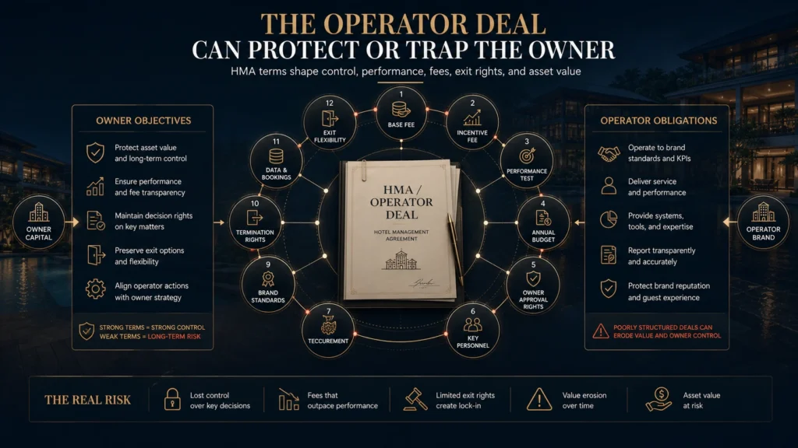
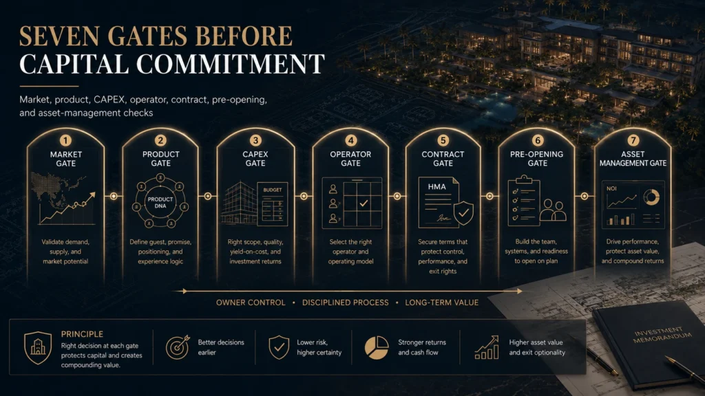

Family office hospitality investment often starts with confidence. The family understands land, buildings, financing, and long-term asset ownership. However, that confidence becomes dangerous when investors approach a hotel like passive real estate.
A hotel is not a building with guests inside it. It is an operating business that sells trust every day through pricing, service, staffing, food, wellness, housekeeping, maintenance, reputation, distribution, and management discipline.
For Indonesian family offices, family-owned business groups, and family-controlled conglomerates, hospitality can become a strong asset class. However, the family must understand one point early: the real investment is not only land and construction. The real investment is the operating system that turns the asset into recurring revenue, defensible positioning, and long-term value.
Key Takeaways
- Family office hospitality investment is not passive real estate investment. Hotels depend on daily operating performance, not only land value, architecture, or construction quality.
- In Indonesia, families often invest in hospitality through family-owned companies, holding groups, and conglomerates rather than formal family office structures.
- The biggest mistakes happen before opening: weak Product DNA, premature operator selection, under-negotiated hotel management agreements, unclear governance, and missing pre-opening systems.
- A branded operator can add value. However, the family must still protect its owner-side position through contract discipline, approval rights, performance logic, and asset management.
- Zenith’s operator-first view is simple: before capital moves, the family must know what the product is, who it serves, how it operates, who manages it, and how performance will be controlled.
Why This Topic Matters Now
Family office hospitality investment is becoming more relevant in Indonesia because hotels, resorts, villas, branded residences, wellness assets, and mixed-use lifestyle projects offer something many conventional property assets do not: brand value, operating upside, recurring revenue, and long-term positioning.
Indonesia’s tourism fundamentals remain significant. BPS Indonesia reported that international visitor arrivals reached 1.09 million in March 2026, while domestic tourism trips reached 126.34 million and the room occupancy rate of star hotels reached 42.78 percent.
Bali remains one of Indonesia’s strongest hospitality markets. BPS Bali reported 572,668 foreign tourist arrivals to Bali in December 2025, with star-rated hotel room occupancy at 60.88 percent.
However, strong destination demand does not protect a weak hotel concept.
A market can look attractive while a specific project remains poorly structured. A family can own a premium site and still build the wrong product. A famous operator can enter the conversation and still negotiate a contract that does not protect the owner. A beautiful resort can open and still underperform because nobody built the staffing model, guest logic, revenue strategy, and pre-opening plan properly.
This is where many family-backed hospitality investments go wrong.
The Terminology Problem: Family Office, Family Group, or Family-Controlled Capital?
In Indonesia, the term “family office” is becoming more visible. However, in practical hospitality investment, many families do not invest through formal family office structures.
Instead, they often invest through:
- family-owned companies;
- property development groups;
- operating businesses;
- holding companies;
- family-controlled conglomerates;
- private investment vehicles.
This distinction matters. The article is not only about formal legal structures. It is about a capital behavior pattern.
Public examples show this broader pattern. Kompas reported that the family company behind Roti’O, through PT Primahotel Manajemen Indonesia, is developing D’prima Hotel Nusantara in IKN. In another example, Liputan6 reported that Tanly Hospitality, part of Tancorp, planned three new hotels in Bali across Canggu, Ubud, and Benoa.
Therefore, the strategic issue is not whether the capital vehicle carries the formal label “family office.” The real issue is whether family-controlled capital enters hospitality with the right operating discipline.
The Core Problem in Family Office Hospitality Investment
A hotel is one of the most operationally sensitive real estate-backed businesses a family can own.
The land matters. The architecture matters. The construction budget matters. However, none of these elements independently creates hotel performance. They only create the physical platform.
Actual hotel value comes from how the asset operates.
| Value Driver | What It Really Depends On |
|---|---|
| ADR | Positioning, brand promise, guest segment, distribution, reputation, and rate discipline |
| Occupancy | Demand fit, sales channels, seasonality, market access, and pricing strategy |
| RevPAR | Rate and occupancy working together, not one in isolation |
| GOP | Departmental efficiency, payroll discipline, F&B performance, and cost control |
| NOI | GOP, owner costs, FF&E reserve, debt structure, and asset-level expenses |
| Asset value | Sustainable earnings, brand defensibility, asset condition, and buyer confidence |
| Exit optionality | Operator contract, encumbrances, performance history, and owner-control rights |
For that reason, investors cannot assess family office hospitality investment only as “land plus building plus projected occupancy.”
The owner must understand the operating business before committing capital.

Mistake 1: Treating the Hotel Like a Building First
Many family investors start with land and architecture. The internal discussion often becomes:
- What can we build?
- How many rooms can fit?
- What will the render look like?
- Which architect can make it iconic?
- Which operator can brand it?
These are legitimate questions. However, they are not the first questions.
The first questions should be:
- Who is the guest?
- Why will this guest choose us over the competitive set?
- What rate can the product defend?
- What service promise must the team deliver?
- What operating model does the asset need?
- What staffing model does that imply?
- What CAPEX can the business case justify?
- Which operator model protects the owner?
Without those answers, the project becomes a building searching for a business.
This is why Zenith usually recommends starting with a proper hotel feasibility study in Bali or Indonesia before the project moves too far into design, operator talks, or heavy CAPEX commitments.
Mistake 2: Entering Without Product DNA
Product DNA is the strategic operating code of the asset. It defines what the hotel is, who it serves, what it promises, how it behaves, how it earns, and how the team should operate it.
For family-backed hospitality projects, the owner should define Product DNA before heavy design development, operator negotiation, or final financial modeling.
A proper Product DNA for hotel development should clarify:
| Product DNA Element | Owner-Side Question |
|---|---|
| Target guest | Who is this asset actually for? |
| Core promise | What problem, desire, or identity does it serve? |
| Market position | What can it own that competitors cannot easily copy? |
| Experience logic | What happens from arrival to departure? |
| Spatial logic | Which spaces are revenue-critical, service-critical, or brand-critical? |
| Operating model | What team, systems, SOPs, and leadership structure does it need? |
| Commercial logic | Where do ADR, ancillary revenue, repeat demand, and margin come from? |
| Brand architecture | How does the asset behave before visual identity starts? |
Many investors move directly from land to architect to brand moodboard. That sequence is backwards.
The correct sequence is:
Product DNA → Feasibility → Operator Strategy → Design Translation → Pre-Opening Governance → Opening → Asset Management
Without Product DNA, the project may become design-led, contractor-led, or operator-led instead of owner-led.

Mistake 3: Choosing the Operator Too Early
The owner should not select a brand or operator before understanding the product and investment logic.
HospitalityNet warns that owners weaken their position when they decide they “must have” one specific brand and fail to create selective competition. It also notes that owners who let the franchisor drive the process can end up with a letter of intent or term sheet before they have properly identified their own needs.
For Indonesian family capital, this creates a common strategic risk.
A famous operator name can create emotional comfort. It can also help with lender confidence, marketing, and prestige. Nevertheless, operator reputation does not automatically create owner protection.
The family must compare:
- brand fit;
- commercial terms;
- fee structure;
- approval rights;
- pre-opening responsibility;
- technical services scope;
- distribution strength;
- key personnel control;
- performance test mechanics;
- termination rights;
- exit impact;
- relationship with branded residences, villas, clubs, spa, wellness, or F&B components.
A disciplined hotel operator search in Indonesia should create comparison, tension, and owner-side clarity. Therefore, the family should choose the operator only after it understands what the project must protect.
Mistake 4: Signing Commercial Terms Before Understanding Operating Reality
Hotel Management Agreements are not light commercial documents.
JLL and Baker McKenzie reported that initial hotel management agreement terms in Asia-Pacific averaged 17.4 years in 2024, based on approximately 400 management contracts analyzed over 20 years. The same survey noted that average base fees had come down to 1.6 percent of revenue, while incentive fees were increasingly linked to GOP thresholds.
This is not Indonesia-specific data. However, it gives owners a useful regional proxy. HMAs can lock the owner into a long-term operating relationship.
Farrer & Co explains that under a standard HMA, the owner holds the hotel real estate and appoints a management company or operator to operate the hotel, usually with a fee structure that may include fixed and incentive elements.
The risk is not only fee percentage. The risk is control.
| HMA Area | Owner-Side Risk |
|---|---|
| Base management fee | Operator earns even when owner return is weak |
| Incentive fee | Badly structured thresholds can reward weak performance |
| Performance test | The test may come too late, remain too soft, or prove difficult to enforce |
| Annual budget | Owner may lose meaningful cost control |
| Procurement | Operator may control vendor decisions under brand standards |
| Key personnel | GM and leadership quality can define asset performance |
| Technical services | Scope gaps can create pre-opening confusion |
| Termination | Early exit may become costly or practically difficult |
| Brand standards | Owner may carry CAPEX obligations without enough flexibility |
| Data and bookings | The contract must clarify customer data ownership and transition rights |
This is why hotel management agreement Indonesia discussions should not start as legal drafting only. The legal structure must reflect hotel operating reality.
In practice, the owner must understand how the asset will run before signing long-term commercial terms.

Mistake 5: Underestimating Pre-Opening Governance
A hotel does not become operational just because construction finishes.
Pre-opening is a separate operating phase. It requires governance, sequencing, ownership, reporting, recruitment, training, SOP development, systems setup, commercial activation, local market seeding, procurement, OS&E / FF&E readiness, mock service, defect resolution, and phased opening logic.
Family-backed investors often underestimate this phase because the pre-opening budget looks like overhead before revenue begins.
In reality, weak pre-opening control becomes expensive after opening.
Typical pre-opening failures include:
- late GM appointment;
- no operating calendar;
- incomplete SOPs;
- no departmental training plan;
- weak recruitment pipeline;
- no revenue-management setup;
- no direct booking architecture;
- incomplete owner approval matrix;
- unresolved supplier logic;
- unclear spa, wellness, and F&B positioning;
- late launch marketing;
- soft opening treated as full opening;
- opening date driven by construction rather than readiness.
Pre-opening strategy is not administration. It is investment protection.
Therefore, the family must treat this phase as the bridge between construction spend and operational performance.
Mistake 6: Importing Bali Assumptions Into Every Project
Bali can be a strong hospitality market. However, it is not a universal underwriting template.
Investors often misunderstand Bali hotel investment risks because they look at destination demand and assume the project will perform. That logic is incomplete.
A family should not assume that because some Bali hotels perform well, any hotel in any Indonesian destination can perform with Bali-style ADR, staffing ratios, ramp-up speed, or amenity depth.
Every destination requires its own underwriting:
- access and airlift;
- domestic vs international demand;
- seasonality;
- average length of stay;
- labor availability;
- utilities and infrastructure;
- supply pipeline;
- local price ceiling;
- F&B capture;
- wellness demand;
- group or MICE demand;
- owner-operated vs third-party operated model;
- exit liquidity.
A luxury villa resort in Bali, a wellness retreat in Sumba, a business hotel in IKN, and a mixed-use lifestyle asset in South Bali are not the same business.
This is also why Zenith warns investors not to repeat Bali’s mistakes when evaluating Indonesia emerging destination hotel investment. Each project must be tested on its own product logic, operating model, and commercial reality.
Mistake 7: Missing Owner-Side Asset Management After Opening
The family’s work does not end when the hotel opens or the operator steps in.
This is where many owners become passive. They receive monthly reports, attend periodic meetings, and assume the operator protects the asset.
However, operators and owners do not always have identical priorities.
An operator may focus on brand standards, guest scores, system compliance, and portfolio consistency. Meanwhile, the owner must focus on asset value, NOI, capital discipline, cash flow, contract performance, and exit optionality.
Hotel asset management Indonesia should not be treated as a luxury. It is the owner’s performance-control function.
Owner-side asset management should review:
- monthly P&L;
- market penetration;
- ADR strategy;
- RevPAR index;
- GOP flow-through;
- payroll ratio;
- channel mix;
- OTA dependency;
- direct booking performance;
- guest review patterns;
- CAPEX discipline;
- operator responsiveness;
- service consistency;
- annual budget quality;
- business-plan execution.
Without this discipline, the family may own the asset but fail to control the business logic.
The Zenith View: Capital Needs an Operating Brain
The mistake is not entering hospitality. The mistake is entering hospitality without an operating brain on the owner’s side.
Zenith’s operator-first view is that every family office hospitality investment must answer five owner-side questions.
| Question | Why It Matters |
|---|---|
| What is the product? | Prevents generic design and weak market position |
| Who is it for? | Defines ADR, channel strategy, service model, and brand promise |
| How does it operate? | Defines staffing, SOPs, systems, payroll, service flow, and standards |
| Who manages it? | Defines HMA, franchise, lease, white-label, or owner-operated structure |
| How does the owner control performance? | Protects NOI, asset value, owner rights, and exit optionality |
Most weak projects do not fail because the family lacked capital.
They fail because the family committed capital before the operating thesis matured.
For Zenith, the correct owner-side sequence is:
- investment thesis;
- market and demand validation;
- Product DNA;
- concept-level financial model;
- operator strategy;
- design translation;
- HMA / commercial structure;
- pre-opening governance;
- opening readiness;
- ongoing asset management.
This sequence protects the family from building the wrong asset, hiring the wrong operator, signing the wrong contract, or opening without the systems required to perform.
It also protects the brand. As Zenith explains in its work on Bali boutique hotel brand architecture, a hospitality brand is not only a logo, name, or visual identity. It is an operating system that the team must deliver every day.
Owner-Side Hospitality Investment Framework
Before committing serious capital, family offices and family-controlled groups should use this framework.
| Gate | What the Owner Must Answer | If Missing, the Risk Is |
|---|---|---|
| 1. Market Gate | Is there real demand for this product at the required rate? | Overstated ADR and occupancy |
| 2. Product Gate | What is the Product DNA and guest promise? | Generic hotel with weak defensibility |
| 3. CAPEX Gate | Does the design make commercial sense? | Overcapitalized asset |
| 4. Operator Gate | Which operating model best protects the owner? | Wrong operator or contract structure |
| 5. Contract Gate | Do HMA, franchise, or lease terms protect the owner? | Long-term control loss |
| 6. Pre-Opening Gate | Are the team, SOP, tech, sales, and launch plan ready? | Weak opening and revenue leakage |
| 7. Asset Management Gate | Who monitors performance after opening? | Passive ownership and NOI erosion |
This is not bureaucracy. It is investment protection.
Operational Implications
The operating implications are direct.
A family-backed hotel project needs:
- clear development governance;
- an owner-side hospitality lead;
- Product DNA before design finalization;
- operator-search process before operator commitment;
- operating model before staffing assumptions;
- SOP and training architecture before opening;
- commercial activation before launch;
- monthly asset management after opening.
Without these controls, the hotel team inherits unresolved decisions from the development phase.
As a result, the GM becomes the person expected to fix strategic mistakes after the project has already spent the money.
Commercial Implications
The commercial consequences are equally direct.
Weak hospitality structuring can damage:
- ADR because the product cannot defend premium pricing;
- RevPAR because rate and occupancy logic were not built together;
- GOP because staffing, utilities, F&B, spa, and service costs were not modeled realistically;
- NOI because owner costs, FF&E, debt service, and operator fees were underestimated;
- asset value because earnings lack stability or operator encumbrances reduce flexibility;
- exit optionality because the buyer inherits a weak contract or unclear brand position.
For family capital, the main risk is not only losing money.
The larger risk is locking capital into a beautiful but underperforming asset that becomes difficult to reposition.
This matters even more when investors explore wellness, longevity, and lifestyle-led hospitality. In these sectors, the operating model becomes more important because the guest promise is more complex than accommodation alone. Zenith’s view on Bali longevity hospitality investment follows the same principle: concept, clinical boundaries, service logic, staffing, and commercial model must be clear before the family commits full capital.

What To Do Before Committing Capital
Before entering a hotel, resort, villa, wellness, or mixed-use hospitality project, the family should complete six steps.
| Step | Action | Owner-Side Output |
|---|---|---|
| 1 | Run hospitality feasibility, not only real estate feasibility | Demand, ADR, occupancy, cost, and downside logic |
| 2 | Define Product DNA | Guest, promise, positioning, experience, service, and commercial logic |
| 3 | Build concept-level operating model | Staffing, departments, payroll, systems, and service flow |
| 4 | Run structured operator search | Comparable operator proposals and scoring |
| 5 | Prepare HMA, franchise, or lease negotiation position | Owner approval rights, KPIs, fees, termination, and reporting |
| 6 | Build pre-opening governance | Timeline, roles, SOPs, training, commercial launch, and readiness gates |
The goal is not to slow the project down.
The goal is to prevent expensive decisions from happening in the wrong order.
FAQ
What is family office hospitality investment?
Family office hospitality investment refers to private family-backed capital entering hotels, resorts, villas, branded residences, wellness assets, or mixed-use hospitality projects. In Indonesia, this may not always happen through a formal family office entity. Many families fund projects through family-owned companies, holding groups, property arms, or conglomerates. Therefore, the key issue is not the legal label. The key issue is whether the family approaches hospitality as an operating business, not only as a real estate asset.
Are Indonesian family offices investing in hospitality?
Yes, but the terminology needs care. Many Indonesian hospitality investments come through family-owned companies, holding groups, property arms, or family-controlled conglomerates rather than clearly disclosed formal family office entities. Public examples include family-backed hotel projects such as D’prima Hotel Nusantara in IKN and Tanly Hospitality’s Bali expansion. Therefore, the safer wording is “family-backed capital” or “family-owned business group” unless the source explicitly says “family office.”
Why do family-backed hotel investments underperform?
They usually underperform when the family treats the hotel like a real estate asset instead of an operating business. The building may open, but the operating model may remain weak. Common gaps include unclear target guest, poor staffing logic, late operator selection, underdeveloped SOPs, unrealistic pre-opening budgets, weak revenue strategy, and limited owner-side asset management. In hotels, daily execution drives performance.
Should a family choose a branded hotel operator?
Sometimes, but not automatically. A branded operator can add distribution, standards, credibility, and market confidence. However, the owner must compare multiple options and understand the long-term HMA implications. A famous brand does not replace Product DNA, feasibility, operating model, owner approval rights, performance tests, and contract discipline.
What should be done before signing a hotel management agreement?
Before signing a hotel management agreement, the owner should clarify the product, target guest, commercial thesis, operating model, technical services scope, fee structure, performance tests, approval rights, termination rights, budget process, owner reporting, data ownership, and pre-opening responsibilities. Legal counsel is essential. However, the legal position should follow hospitality operating logic, not the other way around.
Why is Product DNA important for family offices?
Product DNA prevents capital from moving into a generic asset. It defines the guest, promise, positioning, experience logic, spatial logic, service model, commercial model, and operator requirement. Without Product DNA, the project may become design-led, operator-led, or contractor-led instead of owner-led. As a result, the family may spend heavily before it understands what the business actually needs to become.
How does Zenith support family-backed hospitality investments?
Zenith supports family-backed hospitality investment by acting as the operator-first advisory layer on the owner’s side. This can include feasibility direction, Product DNA development, operating model design, operator-search support, HMA preparation logic, pre-opening governance, SOP direction, commercial activation, and asset-performance review. The goal is simple: protect the owner before capital becomes expensive to correct.
Summary Takeaways
Family office hospitality investment can create long-term value, but only when the family structures the asset as an operating business from the beginning.
The family must understand that architecture alone does not create hospitality value. Value comes from the alignment of product, guest, service, staffing, operator structure, commercial model, and owner-side governance.
The most important takeaways are:
- Hospitality is not passive property. It is an operating business supported by real estate.
- Indonesian family capital should use “family office” terminology carefully because many families invest through family-owned groups and conglomerates.
- Strong market demand does not rescue a weak product, weak contract, or weak operating model.
- Operator selection should follow Product DNA and owner-side commercial logic, not emotional brand preference.
- HMAs can create long-term value. However, they can also create long-term control risk if the owner negotiates them poorly.
- Pre-opening governance is not overhead. It is the bridge between construction spend and operational performance.
- The family must remain active after opening through owner-side asset management.
Speak With Zenith Before Capital Becomes Expensive to Correct
Before committing capital to a hotel, resort, villa, wellness retreat, or mixed-use hospitality asset, Zenith Hospitality Global can help pressure-test the investment from the owner’s side.
We help family offices, family-owned business groups, developers, and private investors define the Product DNA, validate the operating model, structure the operator strategy, prepare the management-contract logic, and build the governance required to turn a hospitality asset into a performing business.
If your family is evaluating hospitality investment in Indonesia, speak with Zenith before the project becomes too expensive to correct.
Start a conversation